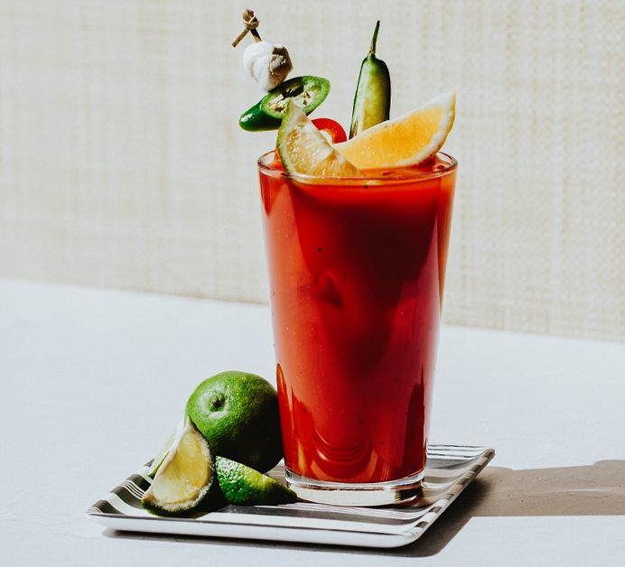

1.Pour salt onto a small plate. Moisten the rim of a glass and press into the salt. Fill the glass with ice cubes.
2.Fill a cocktail shaker with ice cubes; add vegetable juice cocktail, vodka, Worcestershire sauce, hot pepper sauce, salt, and pepper.
3.Cover and shake until the outside of shaker has frosted, about 20 seconds.
4.Strain Bloody Mary into the prepared glass and garnish with celery stalk and olives.